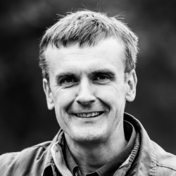

Hi, I’m Chris Hodgson, a PHP Web Developer based near Sheffield. I specialise mainly in
Symfony and Laravel projects but also have good experience with JavaScript -
see my skills & experience...
In my spare time I like to go
bog hopping in the Peak District.